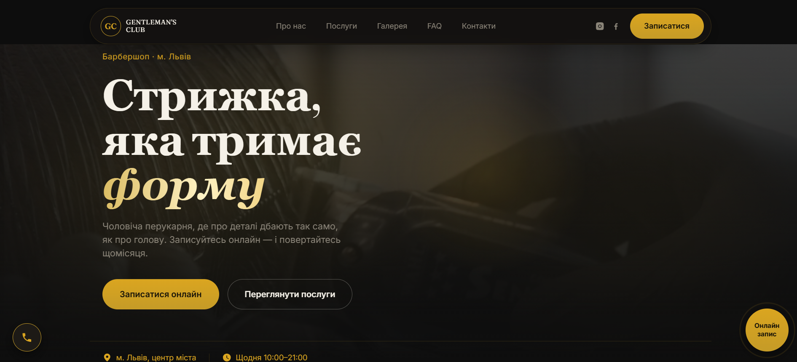
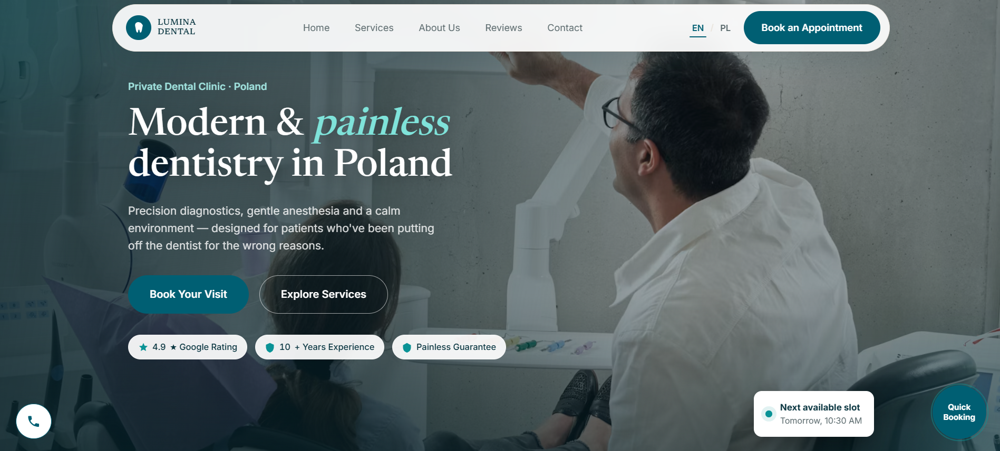
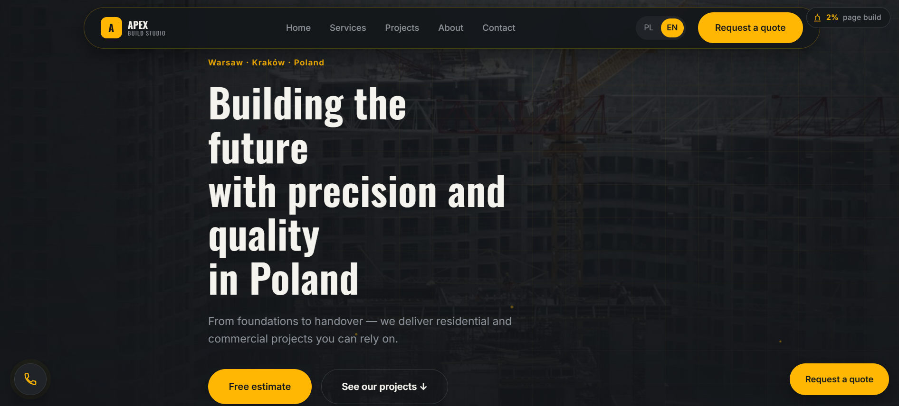
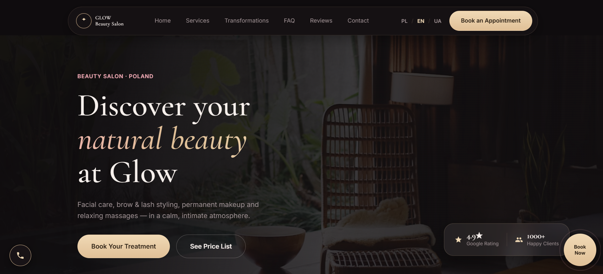
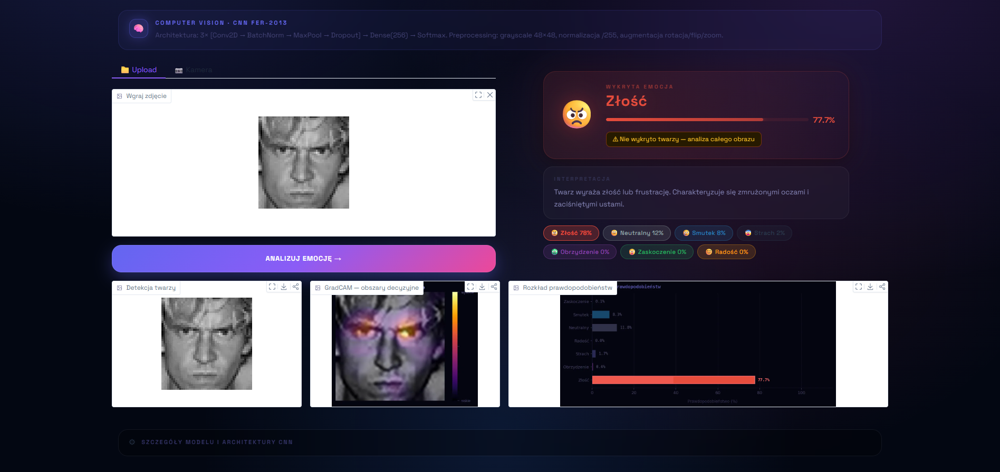
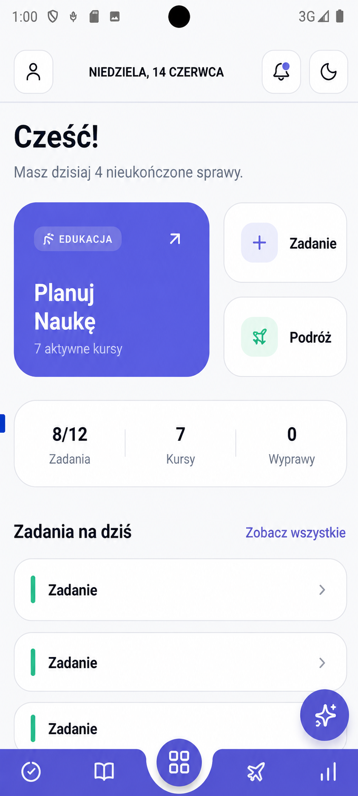
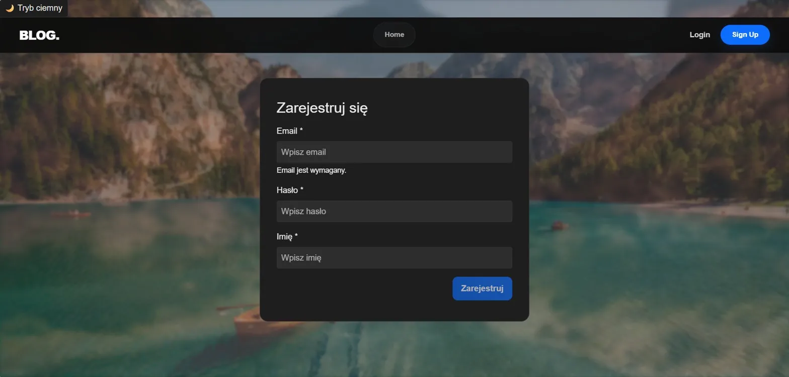
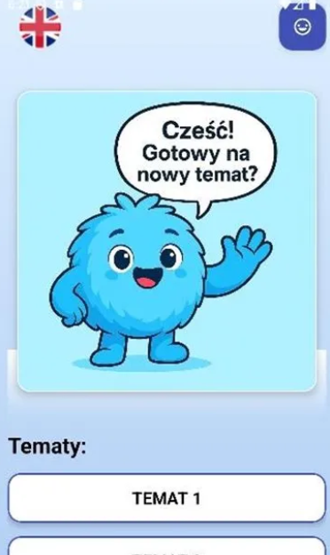
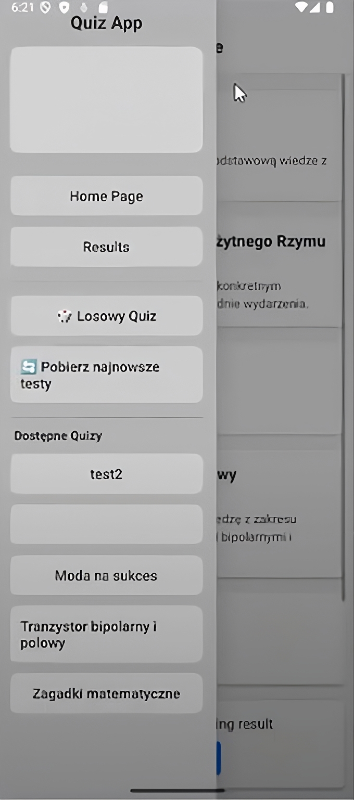

Projekty
Aplikacje webowe, mobilne, gry i narzędzia backendowe — tu trafia wszystko co zbudowałem.

OSK Expert
Strona internetowa dla ośrodka szkolenia kierowców — freelance. Panel admina do zarządzania kursami, aktualnościami i statystykami odwiedzin. Projekt live.

Vaultify
Zero-knowledge aplikacja do jednorazowego udostępniania sekretów — hasła i klucze API szyfrowane lokalnie w przeglądarce (AES-256-GCM), zanim cokolwiek trafi na serwer. Read-once, podział klucza Shamira i tryb wabika.

Vaeloq
W realizacjiAplikacja Next.js realizująca pełny pipeline RAG — wgrywasz PDF, system tnie go na fragmenty, indeksuje jako wektory w pgvector i odpowiada na pytania, osadzając odpowiedź w konkretnych cytatach ze źródła.

Omniscale
W realizacjiAI-powered platforma do orkiestracji infrastruktury chmurowej z wbudowanym agentem SRE — deklaratywne zarządzanie zasobami inspirowane Terraform, dashboard monitorowania w czasie rzeczywistym i interaktywna topologia systemu.

Barber Craft Landing
UkończonyPremium, ciemna strona typu landing page dla fikcyjnego salonu fryzjerskiego — zbudowana w czystym HTML5, CSS3 i JavaScript, bez frameworków, z sekcją usług, portfolio prac i formularzem kontaktowym.

Lumina Dental
UkończonyNowoczesna, responsywna strona docelowa dla fikcyjnej kliniki stomatologicznej — zbudowana w czystym HTML5, CSS3 i JavaScript, prezentująca profesjonalny, budzący zaufanie interfejs marki medycznej.

Apex Build Landing Page
UkończonyNowoczesna strona promocyjna (landing page) zbudowana w oparciu o semantyczny HTML5, CSS3 i JavaScript — kompletne studium przypadku z sekcjami Hero, Features, Testimonials i Call-to-Action.

GLOW Beauty Salon
UkończonyZmysłowy landing page fikcyjnego salonu urody i zabiegów kosmetycznych — wielojęzyczny interfejs (PL/EN/UA), galeria „przed/po", FAQ i formularz rezerwacji, w estetyce glassmorphism bez frameworków i backendu.

Rozpoznawanie Emocji
Deep learning na zbiorze FER-2013 — klasyfikacja 7 emocji z wyrazu twarzy przy użyciu CNN, automatyczne strojenie hiperparametrów Hyperband i wizualizacja Grad-CAM w aplikacji Gradio.

Smart Planner
Mobilna aplikacja do planowania nauki, zadań i podróży z asystentem AI (LLaMA 3.1 via GROQ API), real-time sync przez Firebase Firestore.

Racing 3D
Autorski silnik wyścigowy napisany od zera w C++ i OpenGL 3.3 — bez Unity ani Unreal. Pełna fizyka, AI na waypointach, shadery Phonga i system ekonomii z garażem 7 samochodów.

Wyspa Mystery
Survivalowa gra FPS z systemem zagadek logicznych. Eksploruj niebezpieczną wyspę, unikaj wilka i zapal ognisko pomocy przed zapadnięciem zmroku.

Blog App
Fullstackowa aplikacja blogowa — Angular + Node.js. System postów, komentarzy, ocen i ulubionych. Panel admina, autoryzacja JWT i Server-Side Rendering.

UAlingo
Aplikacja mobilna Android do nauki języka ukraińskiego — quizy z timerem, gra Word Search, memy edukacyjne i autoryzacja Firebase. 18 ekranów, 10 tematów, 120 pytań.
eventHubAPI
Kompleksowy backend REST API do zarządzania eventami — Spring Boot 3.3, JWT, PostgreSQL. System ról RBAC, zaproszenia, powiadomienia i multimedia w jednym serwisie.

IoT App
Cross-platform aplikacja mobilna do sterowania urządzeniami smart home — dodawaj lampy, rolety i inne urządzenia, przypisuj miejsce, komendy i kolor identyfikacyjny.

Quiz App
Mobilna aplikacja edukacyjna do rozwiązywania testów wielokrotnego wyboru — timer na pytanie, globalny ranking, tryb offline z SQLite i synchronizacja z REST API.